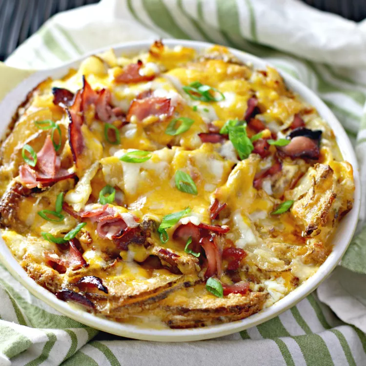

Cheesy Scalloped Potatoes and Ham

This cheesy scalloped potatoes and ham-layered casserole dish features buttery potatoes and sweet hickory ham baked
in a double Jack and Cheddar cheese sauce. It's a quick and easy recipe that's perfect this time of year as a
holiday side dish, or delicious anytime as a cozy meal on a chilly night!
- 3 tablespoons butter
- 1 small yellow onion, diced
- 3 tablespoons all-purpose flour
- 1 cup half-and-half
- U+00bd cup whole milk
- salt and ground black pepper to taste
- 1 teaspoon garlic powder
- U+00bd teaspoon Worcestershire sauce
- U+00bd teaspoon onion powder
- U+00bd teaspoon paprika
- 4 large russet potatoes, peeled and thinly sliced
- 1 U+00bd cups chopped hickory smoked ham
- U+00bd cup grated Cheddar cheese
- U+00bd cup grated Monterey Jack cheese
- Preheat the oven to 375 degrees F (190 degrees C). Butter a baking dish.
- Melt butter in a large skillet over medium heat. Add onion; cook and stir until starting to soften, 3 to 4
minutes. Sprinkle flour over onion and whisk together. Cook until golden brown, about 2 minutes. Stir in
half-and-half and milk; whisk until thickened, 3 to 4 minutes more. Remove from heat; season sauce with salt and
pepper. Add garlic powder, Worcestershire sauce, onion powder, and paprika.
- Place half the sliced potatoes into the baking dish; top with half the chopped ham. Sprinkle half the Cheddar
cheese and half the Monterey Jack cheese on top. Pour in half the sauce from the skillet. Repeat layering the
remaining potatoes, ham, cheeses, and sauce, ending with a layer of cheese and sauce. Cover dish with aluminum
foil.
- Bake in the preheated oven for 40 minutes. Remove the foil and bake until the cheese on top is golden and sauce
is bubbling, 20 to 30 minutes more.